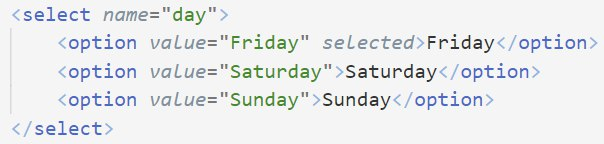

Ініціалізація форми
Щоб зробити форму, її треба оголосити тегом <form>. Цей тег подвійний. Атрибуту method слід присвоїти 'post', для форми, яку ми розглядатимемо наступною, також треба action присвоїти 'login'.
Текстові поля
Тестове поле, як і будь-яке інше поле вводу, оолошується тегом <input>. Цей тег вже одинарний. Отож, для текстового вводу type має бути 'text'. Також можна назвати поле вводу, назву внеести в атрибут 'name'. Деякі види поля вводу в HTML5:
- color
- range
- time
- date
- month
- search
- url
- datetime
- number
- tel
- week
Поле вводу тексту також можна викликати тегом <textarea>. Воно дозволяє вводити повноцінний текст. Взагалі, тег input за означенням викликає компактні поля взаємодії. Текст цим тегом можна приймати тільки без newline.
Кнопки
Кнопки, про які тут йтиметься — це так звані radio buttons. Тобто вибрати можна тільки одну з них. Для цього тип input має бути radio. Також можна вибрати одну з кнопок заздалегідь, наприклад, ту, яку користувачі найчастіше обирають. Для цього достатньо в тег відкривання просто вставити атрибут checked.
Checkbox
Тип input — checkbox. Від radio button відрізняється тим, що можна вибирати кілька елементів.
Випадайки
Відкривається тегом select. Кожен пункт описується тегом option. Ось так:
Hidden input
Тут тип вводу має бути 'hidden'. Використовується для передачі паролів і взвглі будь-чого, чого інші користувачі не мають бачити.
Вставка файлів
Тип вводу — 'file'. Цей тип вводу важко стилізується CSS.